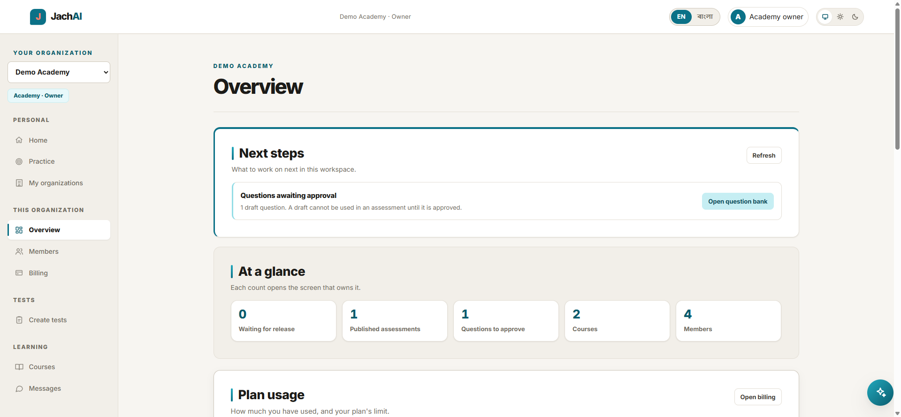
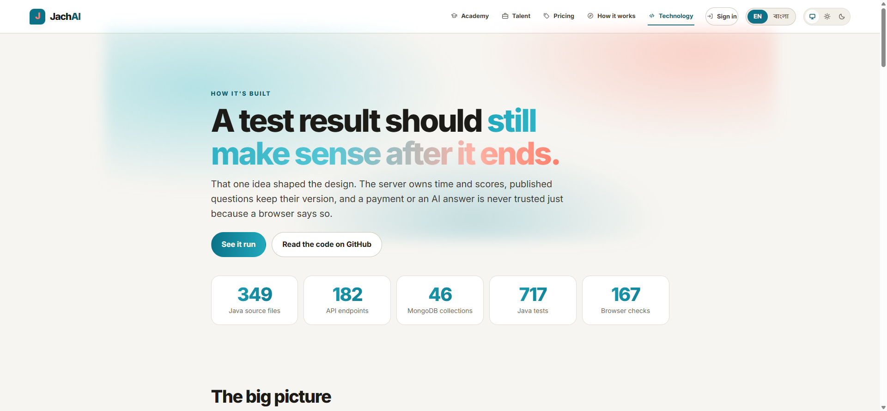

Nazmul Hasan
Software engineer building dependable backends and applied AI.
I'm a computer science student in Dhaka. I design services in Java, Spring Boot and Go, and I back them with tests, Docker and a live deployment, so you can try the work instead of taking my word for it.
Featured project
The one I'd like you to open first. It's deployed, tested and documented.
JachAI
Tests and certificates where the server keeps the clock.
A platform for schools, training centres and hiring teams. People write and review the questions; the server keeps time, scores and records. Learners get timed tests, an AI tutor that explains their mistakes, and a certificate that anyone can check.
-
AI drafts, people approveGenerated questions are never used until a reviewer signs them off.
-
Two products, one accountAcademy for teaching and Talent for hiring, plus solo practice in English and বাংলা.
-
Built to be checked733 Java tests and 176 browser checks, with the architecture written up in the repo.
The demo has one-click roles, no sign-up. It runs on a free server, so the first visit after a quiet spell can take about half a minute.


More projects
Services, research, desktop apps and graphics. Filter by the kind of work you care about.
-
Brain tumour MRI classificationResearch · Python
Compares CNN approaches for sorting MRI scans into glioma, meningioma, pituitary and no tumour. The YOLOv8-Nano model reaches 98.5% validation accuracy with only 1.4M parameters.
YOLOv8PythonComputer vision -
Club event proposalsWeb service · Deployed with Docker
A Spring Boot service for submitting and managing club event proposals. Ships as a non-root Docker image and deploys to Render with MongoDB.
Java 21Spring BootMongoDBDocker -
Night Harbor 3DComputer graphics · C++
An interactive harbour with a lighthouse, cargo docks and moving ships. It has a day and night cycle, two viewports, animated water and textures generated from maths when image files are missing.
C++OpenGLGLUT -
The ChocomuseDesktop app · Java
A chocolate-shop manager. Admins track stock, sales and revenue; customers browse, fill a cart and pay by cash or card, then see their order history.
JavaFXMySQLMaven -
Daily DriverProductivity app · Java
A small personal planner with a dashboard, a to-do list and a routine view, with screenshots in the README.
JavaMaven -
Scaled dot-product attention posterAcademic poster · LaTeX
A one-page visual explanation of the attention algorithm behind transformers, written up at Southeast University. The PDF and the LaTeX source are both in the repo.
LaTeXTransformers -
Advanced Java workbookPractice · 14 mini-projects
Spring Boot exercises that grew into small projects: Spring Security, MongoDB, a product shop, a smart-city model, unit testing and SOLID principles.
Spring SecurityMongoDBJUnit -
Students APIREST service · Go
A student-records API written in Go. My first backend service outside Java.
GoREST -
Employee managementWeb service · Java
A Spring Boot employee-records service packaged with Docker.
Spring BootDocker -
CampusCollabWeb platform · HTML
A collaboration space for students on one campus, built as a front-end-first project.
HTMLCSSJavaScript -
Data structures in CFundamentals · C
Core data structures and algorithms implemented by hand in C.
CAlgorithms -
Problem solvingPractice · Go
Solutions to problems from well-known coding platforms. I also post on LeetCode.
GoLeetCode -
Things I learnedNotes · 12+ topics
My running coding wiki: algorithms, operating systems, networking and sockets, embedded systems, SQL, assembly, graphics, C and Go.
NetworkingOSEmbeddedSQL
What I work with
Grouped by what each tool does for me, and bold where I've shipped with it.
Languages
Java, Go, C, C++, Python, SQL
Backend
Spring Boot, Spring Security, REST design, JUnit and unit testing, SOLID
Data
MongoDB, Redis, MySQL
Delivery
Docker, Render, Vercel, Git and GitHub
AI and research
YOLOv8, computer vision, attention and transformers, LaTeX papers and posters
Systems
OpenGL, sockets and networking, operating systems, embedded, assembly
Day to day I use IntelliJ IDEA and VS Code, and AI assistants (Claude, GPT, NotebookLM) for drafting, debugging and research. I read and test what they produce before it goes in.
About
I'm a computer science student at Southeast University in Dhaka. I like the part of software people don't see: the clock on the server, the record that can't be edited afterwards, the test that fails before a user does.
My work is mostly Java, Spring Boot and Go, with side trips into machine learning, graphics and low-level systems because they teach me how things really run. I choose code that's easy to reason about over code that's clever.
- Based in
- Dhaka, Bangladesh
- Studying
- Computer science
- Focus
- Backend and applied AI
- Languages
- English, বাংলা
- Availability
- Open to work
Let's talk
Hiring for a backend or full-stack role, or want to collaborate? Send a note and I'll reply by email.